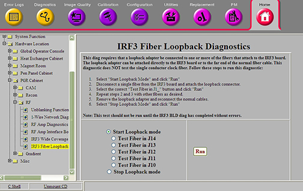

Operating Documentation
Direction 5670000, Rev# 1
Optima MR450w 1.5T Service Methods
Module Version 2.0, Version Date 6/27/08
Operating Documentation |
Diagnostics >> System Function >> RF >> IRF3 Fiber Loopback Diagnostic
Diagnostics >> Hardware Location >> PGR Cabinet >> RF >> IRF3 Fiber Loopback Diagnostic
Illustration 1: IRF3 Fiber Loopback Diagnostic

The IRF3 Fiber Loopback Diagnostics can be used to test the dual fiber connectors of the IRF3 board and the external dual fiber cables that connect the IRF3 to the RRX, DTX, and XGD. This diagnostic requires the user to manually install a fiber loopback adapter on one of the IRF3 fiber jacks or install a fiber loopback adapter and duplex sleeve at the far end of the DTX, RRX, or XGD fibers. Once the fiber loopback adapter is in place, the user instructs the system to test that single connection. Data is sent from the IRF3 and is verified to arrive back at the IRF3 intact. This diagnostic cannot be used to test the fiber links between the RRX and the ICNs.
The IRF3 board has five (5) fiber inputs. Based on the system configuration, 3, 4, or 5 will be used.
The system can have 1 or 2 RRX. (16 or 32 channels).
The system will have 1 XGD.
The system will have 1 DTX-1.
The system may have a DTX-2 (Broadband Exciter for MNS).
This test should not be run until IRF3 BLD has completed without errors.
Fiber Loopback Adapter
Select Start Loopback mode.
Click [Run].
Manually disconnect a single fiber from the IRF3 board and attach the fiber loopback adapter.
Select the correct "Test Fiber in J1_" button.
Click [Run].
Ensure that the diagnostic passes by reviewing the status in the Test Results table.
Repeat steps 2 and 3 with other fibers as desired.
Remove the fiber loopback adapter and reconnect the normal cables.
Select Stop Loopback mode.
Click [Run].
This diagnostic has either a passed or failed status. If the diagnostic has failed, please review the error log and corresponding extended error message for subsequent actions.
In the event that the diagnostic reports a timeout, the diagnostic may not have been executed. Retry the test. If it continues to time out, complete a TPS Reset and then retry the test.